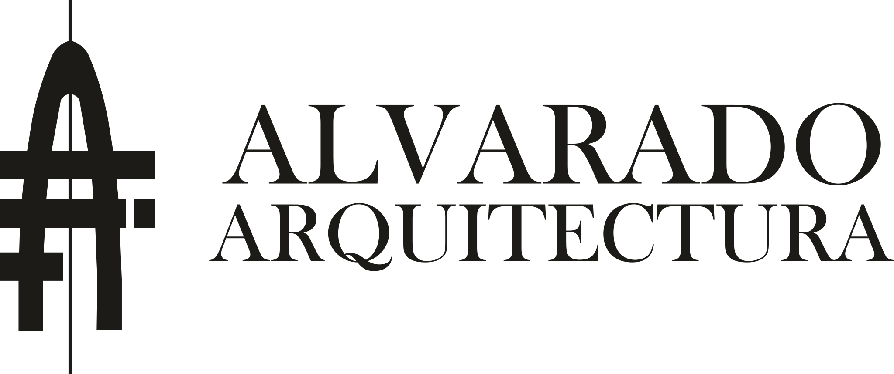

Diseño arquitectónico
Espacios pensados a partir de las necesidades de cada proyecto.
Consultar servicio
Arquitectura · Gestión · Construcción
Diseño, construcción y acompañamiento en la tramitación de proyectos en Bávaro–Punta Cana.
Bávaro / Punta Cana / Verón / zonas cercanas

01 / Especialidades
Espacios pensados a partir de las necesidades de cada proyecto.
Consultar servicioPlanificación y ejecución de las etapas de obra acordadas.
Consultar servicioCoordinación del proceso, sus participantes y documentación.
Consultar servicioAcompañamiento en la revisión y tramitación aplicable al proyecto.
Consultar servicioOrientación para definir los próximos pasos de una inversión.
Consultar servicioRevisión preliminar de la situación física y documental del inmueble.
Consultar servicio02 / Regularización
El primer paso es conocer la situación del inmueble y la documentación disponible. Una evaluación preliminar permite identificar qué aspectos requieren atención.
Conocer el proceso ↗03 / Recursos
Prepararemos guías y documentos informativos para ayudarte a entender tu proyecto.
Visitar recursos ↗